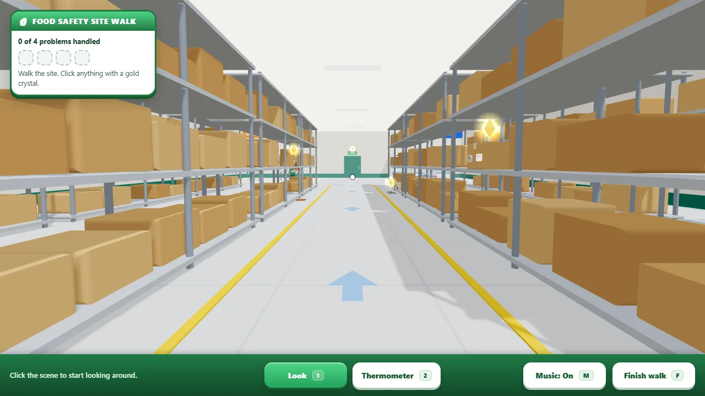

3D Gamification of a Site Walk
An immersive, hands-on food safety walk I built in 3D with AI in under 2 hours

Project Overview
This was a fun test: how far can AI take me in 3D? I wanted to see whether I could turn a food safety site walk into a game that learners explore with their own eyes and hands, instead of reading about it on a slide.
Working with an AI coding assistant, I went from idea to a playable 3D site in under 2 hours. It runs in any desktop browser, with nothing to install.
Play it right here
Click to start, then walk with W, A, S and D and look with the mouse. Press Esc to free your mouse. Best on a desktop or laptop.
Problem
Food safety training usually happens on a screen or in a classroom. The real job looks different: a site manager walks a busy site, notices what is wrong and decides what to do on the spot.
Reading about a leaking box is not the same as spotting one on a shelf. Learners rarely get to practice the walk itself before they do it for real.
Solution
A first-person 3D site walk. The learner plays the site manager on a daily walk:
Explore the aisles, chillers and prep area freely.
Inspect anything marked with a gold crystal.
Decide whether it is a problem or fine, then choose the right action.
Learn from instant feedback and a debrief at the end.
Tools
An AI coding assistant
Three.js (3D in the browser)
Every model, character and music loop generated in code
Team
1 learning designer (me)
1 AI coding assistant
Timeline
Nov 2026
Under 2 hours from idea to playable walk
How I Built It
1. Pick a look
I asked the AI for four art styles side by side and picked a soft, friendly look: bright walls, rounded shapes and toy-like characters. It feels welcoming for a compliance topic without looking like a toy.
2. Write the scenarios
The site hides 4 problems a manager should catch:
A leaking package on a shelf
Chilled food left out of the chiller
An associate without gloves or a hairnet
Pest droppings under a rack
Some items are fine on purpose. Knowing when to leave something alone is part of a good walk.
3. Make it hands-on
Learners do the work, not just read about it. They walk with W, A, S and D, look around with the mouse and pick up a thermometer to take the temperature of a milk cart before deciding what to do. Wrong answers explain why and let them try again, so mistakes become part of the learning.
4. Playtest and tune
I played it, gave the AI feedback in plain words and it rebuilt the scene in minutes. Each round made the walk easier to use:
Gold crystals so learners can tell what to inspect
Game-style dialogue with a speaker portrait and big buttons
Calmer controls for people who do not play games
A light music loop with an on and off switch
A playable, immersive 3D site walk in under 2 hours: 4 real-world hazards, a hands-on thermometer, instant feedback and a full debrief, all built with AI and no 3D modeling.
Takeaways
AI makes 3D possible for a learning designer. No modeler, no game engine, no budget.
My time went to the learning, not the tech: the scenarios, the choices and the feedback.
Immersive and hands-on beats click-next. Learners practice noticing, not just remembering.
What I would try next
Playtest with site managers
Add more areas and hazards
Use real photos in the dialogue cards
Thank you for reading my case study!
Grab a coffee and take the walk yourself.